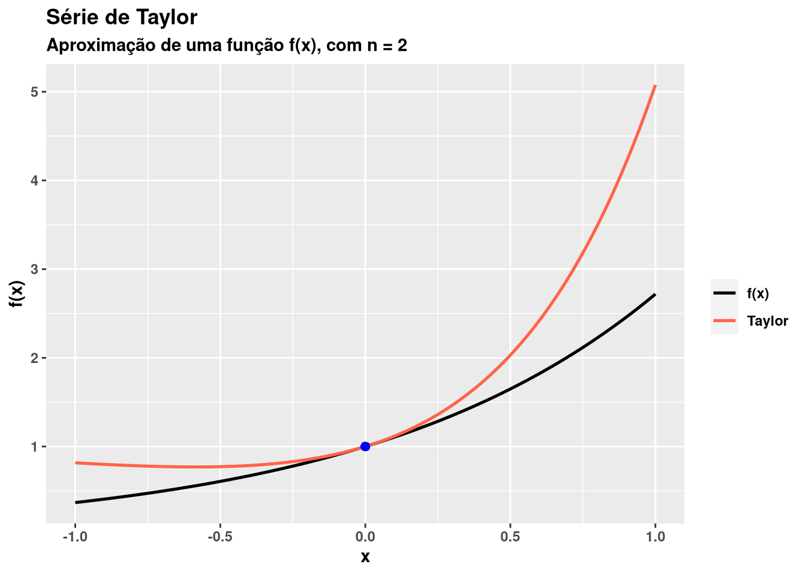
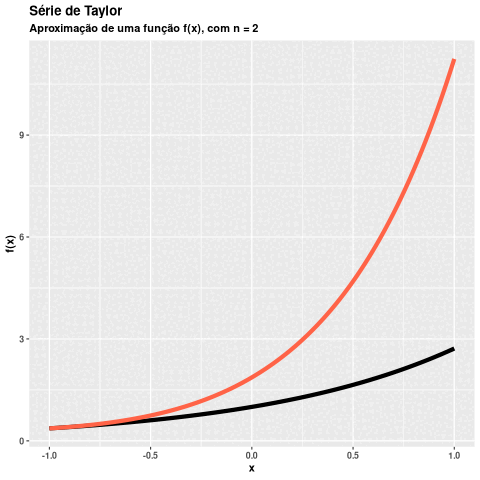
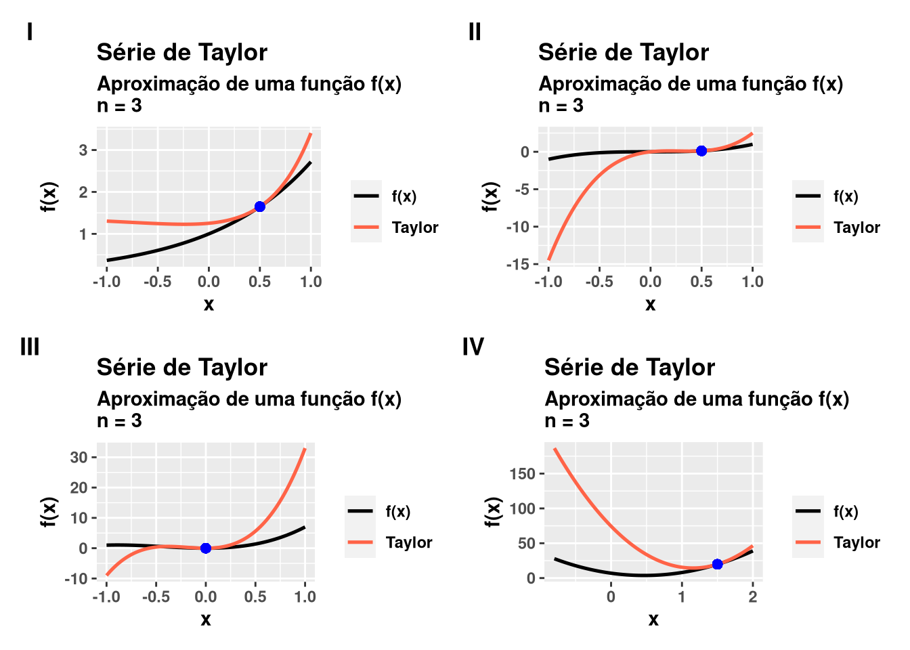

Uma boa forma de desenvolver fluência em uma linguagem de programação é se submeter a resolver problemas utilizando a linguagem que você deseja aprender. Para quem tem interesse em trabalhar com computação científica, um exercício muito interessante é selecionar alguns problemas básicos na sua área de atuação e tentar resolver! Tente entender bem o problema a ser resolvido e se submeta ao exercício de implementar uma função da forma mais genérica possível.
Esse tópico sugiro meio que por acaso. Na verdade, eu estava na sala de aula, explicando aos meus alunos sobre funcionais em R e dizia a eles que nem sempre precisamos utilizar instruções de repetição como for, while e repeat para repetir trechos de códigos, e na aula usei o exemplo das séries de Taylor. Tanto na aula, quanto aqui, deixo claro que séries de Taylor não é o tema principal, muito embora o título da postagem possa talvez te confundir a respeito do propósito dessa postagem.
O maior objetivo é fazer com que você possa estudar o código e entender os recursos utilizados para se chegar a solução. Procure entender o papel do funcional sapply(), da função do.call(), do operador dot-dot-dot ... e do uso de função anônima no funcional sapply(). Esses são basicamente os principais pontos do código.
Todavia, é claro que eu terei que definir brevemente o que é uma série de Taylor. Afinal, precisamos compreender, de forma clara, o que o código tenta implementar. Tudo bem?! 🤝
Compreender de forma cristalina o problema é a chave 🔐 para desenvolver, de forma consistente, um código coerente e reaproveitável. Tente evitar o código espaguete, em que você até resolve o problema, porém, o reaproveitamento de código e a manutenção do mesmo se torna muito desafiador! Fuja desses tipos de implementações e projetos, pois estes não acrescentam muito no seu aprendizado de programação.
Fuja de códigos espaguetes 🍝
Atualmente, o meu maior pavor 😱 em ajudar alguém em programação é olhar para o código de uma pessoa e ver nele um espaguete com instruções confusas e escritas de forma “enlinhada” (como um espaguete 🍝) e cheios de gambiarras (péssimas práticas de programação) 😥.
Evite muitas condições aninhadas para não cair em uma pirâmide de destruição e acabe construindo código espaguete. Abuse, na medida do possível, do uso de funcionais em R.
Eu ministrei uma palestra no Workshop Paraibano de Estatística, em 2020, intitulada Uso de funcionais em R: evitando loops e seus benefícios e alerto um pouco sobre a necessidade de construirmos códigos que possam ser reutilizáveis e mais fáceis de manter.
Caso deseje ver:
Para acessar o vídeo da apresentação, clique aqui 📽️;
Para ter acesso aos slides utilizados, clique aqui 📖.
Se aproximar do uso de funcionais, quando possível, é um ótimo começo para evitar código espaguete. 🎉

Uma ótima postagem que encontrei na internet e que poderá ser útil para você entender sobre a importância de se afastar de código espaguete, em R, poderá ser acessada clicando AQUI. E não se engane, apesar do termo engraçado (código espaguete), há diversos livros na computação sobre o tema.
Série de Taylor
Em matemática, uma série de Taylor é uma soma de funções, de tal forma que
\[f(x) = \sum_{n = 0}^{\infty} a_n(x-a)^n,\] com
\[a_n = \frac{f^{(n)}(a)}{n!},\] em que \(f^{(n)}(a)\) é a \(n\)-ésima derivada da função \(f\) (supostamente sendo infinitamente diferenciável) avaliada no ponto \(a\). Para o caso de \(a = 0\), essa aproximação é denominada de série de Maclaurin.
Por exemplo, considerado \(a = 0\), poderemos aproximar \(f(x) = e^x\), em torno de \(a = 0\) por meio da expressão abaixo:
\[e^x \approx \sum_{n = 0}^N \frac{x^n}{n!},\] com \(N < \infty\).
Implementação
Não irei discutir, nos por menores, a implementação do código, pois certamente seria enfadonho. Estudar o código “não espaguete” 🍝 de outra pessoa é uma boa forma de adquirir conhecimento. O GitHub está aí para você estudar um universo de códigos e melhorar suas práticas de programação, seja em R ou qualquer outra linguagem de programação.
O que eu basicamente fiz foi implementar duas funções:
A função
taylor(n = 1L, func, x, a = 0,...)que recebe o número de somasn, a funçãofunca ser aproximada, um valorxe o valor dea. Também é possível passar argumentos adicionais usando o operador varargs dot-dot-dot (...), em que você poderá controlar argumentos da funçãoDeriv()do pacote Deriv utilizado para o cálculo das derivadas simbólicas de \(f(x)\). O pacote encontra-se no Comprehensive R Archive Network - CRAN e poderá ser instalado fazendoinstall.packages("Deriv")(Clausen and Sokol 2020);A função
plot_taylor(n, func, lower, upper, a)que permitirá que possamos visualizar graficamente a aproximação. Temos quené a quantidade de somas utilizadas na aproximação,funcé a função que desejamos aproximar,loweré o limite inferior do eixo x,upperé o limite superior do eixo \(x\) eaé o ponto onde tentaremos uma boa aproximação em seu entorno.
Note que, em R, funções são objetos de primeira classe. Isso quer dizer que, podemos criar uma função dentro de outra função e, sobretudo, poderemos ter uma função retornando uma função, como é o caso da função an() definida em taylor(). Note que a função an() retorna a função que implementa a derivada de func.
# Série de Taylor ---------------------------------------------------------
taylor <- function(n = 1L, func, x, a = 0,...){
an <- function(n, ...){
Deriv::Deriv(f = func, nderiv = n, ...)
}
if(n == 1L)
return(func(a))
sapply(
X = 1L:n,
FUN = \(n, x) do.call(an(n, ...), list(x = x))/factorial(n) * (x - a)^n,
x = x
) |> sum() + func(a)
}
# Testando a função taylor().
taylor(n = 2L, func = \(x) x^2, x = 0.5, a = 0)[1] 0.75
Derivadas simbólicas
Conhecer derivadas de funções é algo muito corriqueiro na computação científica. Com o pacote Deriv você não precisa se preocupar em derivar simbolicamente (analiticamente) as \(n\)-ésimas derivadas de uma função.
library(Deriv)
# Derivando simbolicamente log(1-sin(x)). Perceba que
# o retorno é uma função R em termos de x.
Deriv(f = \(x) log(1-sin(x)))function (x)
-(cos(x)/(1 - sin(x)))É importante destacar que a obtenção de derivadas simbólicas são mais custosas que os métodos numéricos de derivação, sobretudo quando temos interesse de obter ordens elevadas de derivação. Mesmo assim, irei utilizar aqui a biblioteca Deriv, que poderá ser bastante útil em diversas situações. Para a obtenção de derivadas numéricas, estude a biblioteca numDeriv (Gilbert and Varadhan 2019).
Visualizar graficamente os resultados de uma função poderá nos ajudar na validação da implementação. Comportamentos inadequados na função taylor() seriam facilmente percebidos ao utilizar a função plot_taylor().
library(ggplot2)
library(glue)
library(patchwork)
plot_taylor <- function(n = 1L, func, a, lower = -1, upper = 1, ...){
x <- seq(lower, upper, length.out = 100L)
y <- func(x)
y_taylor <-
sapply(
X = x,
FUN = \(x) taylor(n = n, func = func, x = x, a = a, ...)
)
data.frame(
x = c(x, x),
y = c(y, y_taylor),
classe = c(rep("f(x)", 100L), rep("Taylor", 100L))
) |>
ggplot() +
geom_line(aes(x = x, y = y, color = classe), size = 0.9) +
geom_point(x = a, y = func(a), color = "blue", size = 2) +
ggtitle(
label = "Série de Taylor",
subtitle = glue("Aproximação de uma função f(x)\n n = {n}")
) +
ylab("f(x)") +
scale_color_manual(values = c("black", "tomato")) +
theme(
text = element_text(face = "bold")
) +
labs(color = "")
}
# Aproximando func em torno de "a" ----------------------------------------
p1 <- plot_taylor(
n = 3,
func = \(x) exp(x),
lower = -1,
upper = 1,
a = 0.5
)
p2 <- plot_taylor(
n = 3,
func = \(x) x^3,
lower = -1,
upper = 1,
a = 0.5
)
p3 <- plot_taylor(
n = 3,
func = \(x) 3*x^3 + 4*x^2,
lower = -1,
upper = 1,
a = 0
)
p4 <- plot_taylor(
n = 3,
func = \(x) 15*x^2 - 14*x + 7,
lower = -0.8,
upper = 2,
a = 1.5
)
(p1 + p2)/(p3 + p4) + plot_annotation(tag_levels = "I")
Referências
Clausen, Andrew, and Serguei Sokol. 2020. “Deriv: R-Based Symbolic Differentiation.” https://CRAN.R-project.org/package=Deriv.
Gilbert, Paul, and Ravi Varadhan. 2019. “numDeriv: Accurate Numerical Derivatives.” https://CRAN.R-project.org/package=numDeriv.